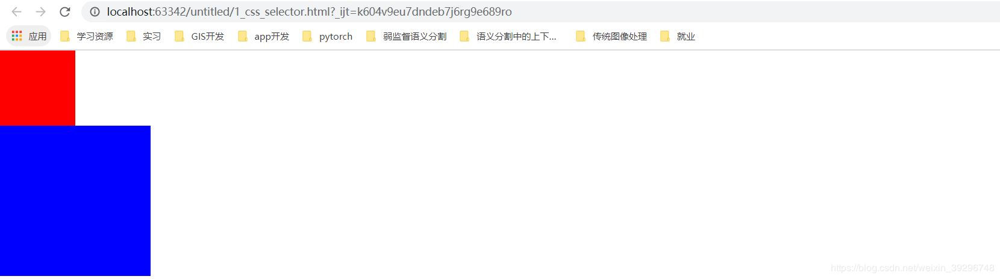
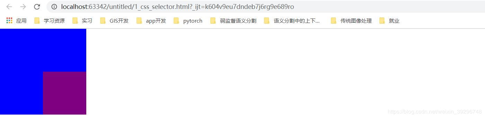
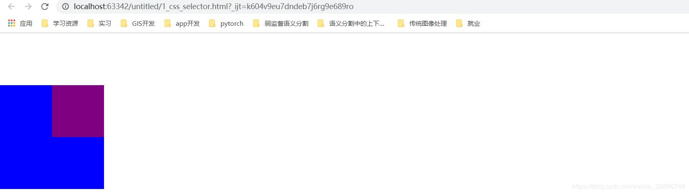
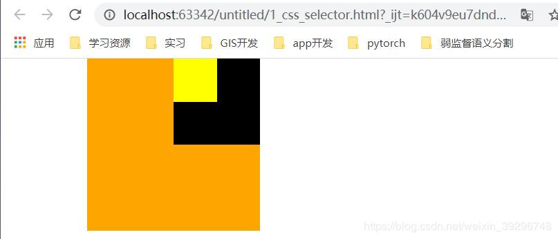
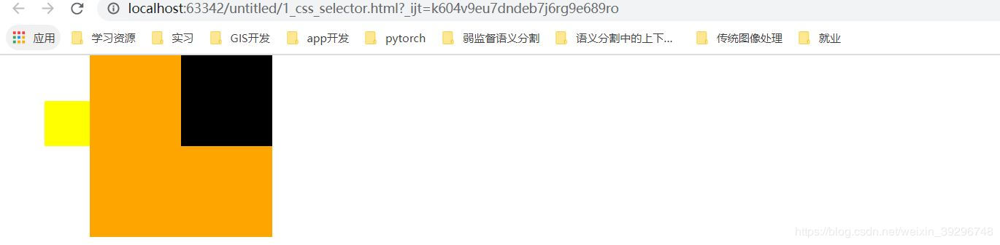
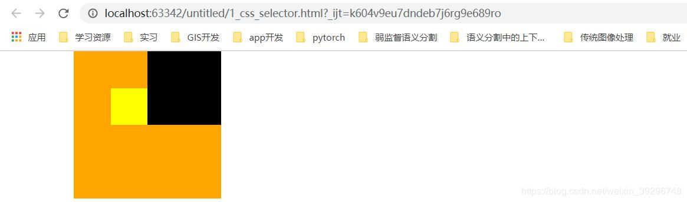
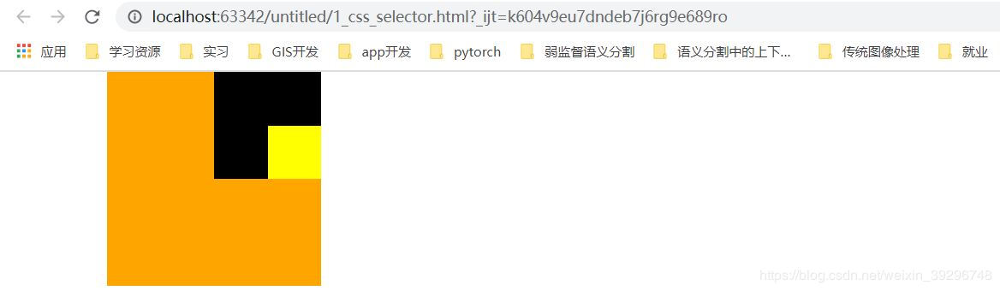

CSS浮动模型
时间：2020-3-2
摘要：css中为了实现目标元素的布局，设计了三种元素的定位模式：绝对定位（absolute）、 相对定位（relative）、固定定位（fixed）。了解这三种定位模式是使用div+css进行页面布局的基础。本篇博客 从原理上详细的讲述了这三种定位模式如何工作。
一、语法
css选择器{
position: absolute;
left: 440px;
top:0;
}
注释一：position的取值有四种:1）absolute-绝对定位；2）relative-相对定位阿；3）fixed-固定定位;
4）inherent-继承父元素的position值
注释二：left和top是对position的补充。相对于定位的锚点向左或者向右偏移。
注释三：css选择器代表着css中任意一种选择器的语法形式
二、3种定位的比较：
| 定位方法 | 定位原理 |
|---|---|
| 绝对定位 | 脱离原始位置进行定位。相对于最近的有定位的父级进行定位，如果没有具有定位的父级或更早的祖先级定位元素，则相对于文档定位 |
| 相对定位 | 保留原来位置进行定位。相对于自己原来的位置进行定位。 |
| 固定定位 | 固定于屏幕的制定位置，无论页面怎么动，被定位的元素不会改变 |
三、定位原理的详述：
1）脱离原始位置进行定位与保留原来位置进行定位的区别：
我们构建两个div：
<div id="box1"></div> <div id="box2"></div>
使用css使得他们的长和宽分别为100px和200px，背景颜色分别为红和蓝：
#box1{ width: 100px; height:100px; background-color: red; } #box2{ width: 200px; height:200px; background-color: blue; }
下面是显示的效果：
为什么会分上下两个div展示出来而不是左右两个div展示呢？这是因为div是独占一行的。有了这个， 我们来看一下，什么是绝对定位的脱离原始位置进行定位。
css改为：
#box1{ position: absolute; left: 100px; top:100px; opacity: 0.5; width: 100px; height:100px; background-color: red; } #box2{ width: 200px; height:200px; background-color: blue; }
我们使得box1为绝对定位，并设置了left与top=100px，透明度为0.5。我们来看一下效果：
可以看到蓝色的box2跑到了左上角。而红色的box则定位到了距离顶端和左端100px的地方。这反应了什么呢？ 我们仔细思考一下，为什么蓝色方框不是在红色方框的下面，而是直接来到了浏览器的左上角？这其实就是 绝对定位的脱离原始位置进行定位的反映。也就是说其实 使用了绝对定位的元素其实已经不在它原来的那一层了。 所以蓝色的方框这一层就只剩下了它自己。那么它自然就来到了左上角。这个情况可以类比我们现实生活中的立交桥。 我们把这两个盒子看作两辆车。正常情况下，当一辆车占据了一个位置后，另一辆车就只能在另一个不与这辆车重合的 位置（不然岂不是就撞到了）。这种情况就和刚开始没有使用绝对定位的情况一致。蓝色方框被挤到了第二行。但是 使用了绝对定位之后，就相当于在这个位置之上建了一个立交桥。红色方框脱离了它原来的位置来到了立交桥上。 此时，蓝色方框与红色方框不在同一层上自然也就互不影响。所以蓝色方框也就可以来到左上角了而不是被挤到红色方 框下面。那什么是相对定位的保留原来位置进行定位呢？
我们把box1的css中position改为relative，也就是box1从绝对定位改为相对定位。它的效果如下：
我们看到蓝色方框的位置还是和最开始没有使用任何定位时一致，红色方框来到了它定位的位置。这就是相对定位的 保留原来位置。也就是，虽然红色方框到了它定位的位置。但是它原来所占据的位置它还是要占着。这就像这个红 色方框的身体已经被强制放到了建好的立交桥上的位置，但是它的灵魂还留在了原地。所以这个蓝色方框在它所在的 那个层还是被挤到了第二行而不能去到左上角。
2）绝对定位相对于最近的有定位的父级进行定位：
建立三个div，层层包裹：
<div class="wrapper"> <div class="content"> <div class="box"></div> </div> </div>
使用css渲染他们：
.wrapper{ margin-left: 100px; width: 200px; height: 200px; background-color: orange; } .content{ margin-left: 100px; width: 100px; height: 100px; background-color: black; } .box{ width:50px; height: 50px; background-color: yellow; }
效果（创建了橘黄色、黑色、金黄色三个box）：
现在我们给金黄色的div设置绝对定位：
.box{ position: absolute; left:50px; top:50px; width:50px; height: 50px; background-color: yellow; }
我们来看一下这下金黄色的div在哪里：
可以很清楚的看到看到金黄色的div应该是以浏览器的左上角做为参照进行了绝对定位。 那么它为什么不是以橘黄色或者黑色的div的左上角顶点做为参照呢？这是因为进行绝对定位的时候， 当前元素会逐级往回找他的祖先元素。当找到第一个设置了position属性的祖先元素之后，它就会以 这个元素的左上角为参照进行定位。而这里它的两个祖先元素黑色、橘黄色div都没有设置position属性， 所以金黄色div进行绝对定位的参照点就来到了浏览器左上角。现在我们将橘黄色的div中position设置为 relative（或者是absolute、fixed都行），这时候金黄色div的参照点就是橘黄色div的左上角了。如下：
.wrapper{ position: relative; margin-left: 100px; width: 200px; height: 200px; background-color: orange; }
3）相对定位相对于自己原来的位置进行定位：
我们把最开始的金黄色div定位方式变为relative：
.wrapper{ margin-left: 100px; width: 200px; height: 200px; background-color: orange; } .content{ margin-left: 100px; width: 100px; height: 100px; background-color: black; } .box{ position: relative; left:50px; top:50px; width:50px; height: 50px; background-color: yellow; }
相对定位的方式就是相对于自身原来所在位置的左上角位置进行定位。
三、何时使用何种定位
那么我们该如何使用这个三种定位方式呢： 通常情况情况下，我们使用relative作为定位的基准点，然后使用absolute进行定位。